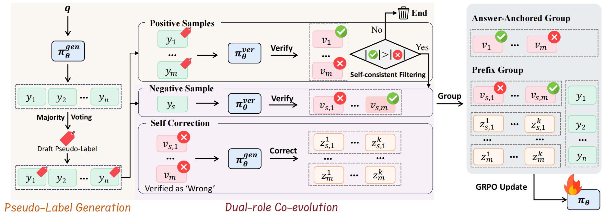
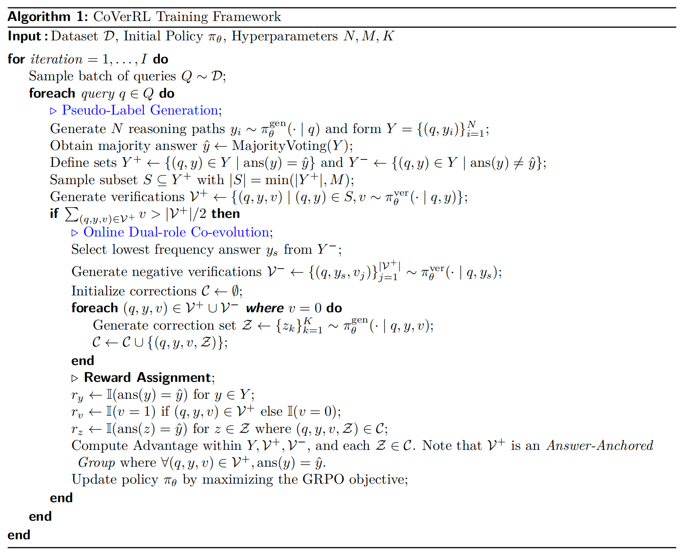
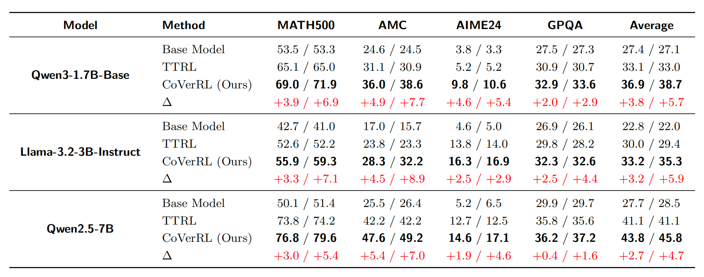

Label-free reinforcement learning enables large language models to improve reasoning capabilities without ground-truth supervision, typically by treating majority-voted answers as pseudo-labels. However, we identify a critical failure mode: as training maximizes self-consistency, output diversity collapses, causing the model to confidently reinforce systematic errors that evade detection. We term this the consensus trap. To escape it, we propose CoVerRL, a framework where a single model alternates between generator and verifier roles, with each capability bootstrapping the other. Majority voting provides noisy but informative supervision for training the verifier, while the improving verifier progressively filters self-consistent errors from pseudo-labels. This co-evolution creates a virtuous cycle that maintains high reward accuracy throughout training. Experiments across Qwen and Llama model families demonstrate that CoVerRL outperforms label-free baselines by 4.7-5.9% on mathematical reasoning benchmarks. Moreover, self-verification accuracy improves from around 55% to over 85%, confirming that both capabilities genuinely co-evolve.

The key principle of CoVerRL is that a single policy model $\pi_\theta$ acts as two roles: a generator $\pi_\theta^{\text{gen}}$ and a verifier $\pi_\theta^{\text{ver}}$. Through their interaction, the model produces high-quality pseudo-labels and achieves coordinated dual-role co-evolution.
First, the model acts as a generator to sample multiple reasoning trajectories for a given query, then identifies the most frequent answer as a draft pseudo-label, splitting trajectories into positive (matching the draft) and negative sets.
The model then switches to its verifier role to scrutinize the positive set. Only queries where the verifier majority judges the positive set as correct are retained for training: this filtering step directly eliminates samples where the generator produces consistent but incorrect reasoning, purging noisy pseudo-labels before they corrupt the training process.
First, Contrastive training data is built from the filtered pseudo-labels—positive samples from the verified majority set, and negative samples from the least frequent incorrect answer.
Then for any trajectory the verifier marks as erroneous, the model reverts to the generator role to produce revised solutions, conditioned on the original query, failed reasoning, and verifier feedback. This enables the model to learn iterative error recovery from its own internal critiques.
The reward function integrates format and accuracy metrics: the binary format reward enforces structural output compliance, while the accuracy reward is a binary indicator of whether the model’s output matches the pseudo-label. For generation tasks, the pseudo-label is the consensus answer; for verification tasks, it is the target judgment (Correct for positive sets, Incorrect for negative sets).
We adapt Group Relative Policy Optimization (GRPO) for multi-turn interactions: unlike standard GRPO (which groups responses by query prefix), we group verification trajectories targeting the same answer for positive verification sets (Answer-Anchored GRPO), while retaining prefix-based grouping for generation and negative verification sets.


CoVerRL consistently outperforms TTRL across all models and benchmarks, achieving average improvements of 5.7%, 5.9%, and 4.7% in Acc.@final for the three models respectively.